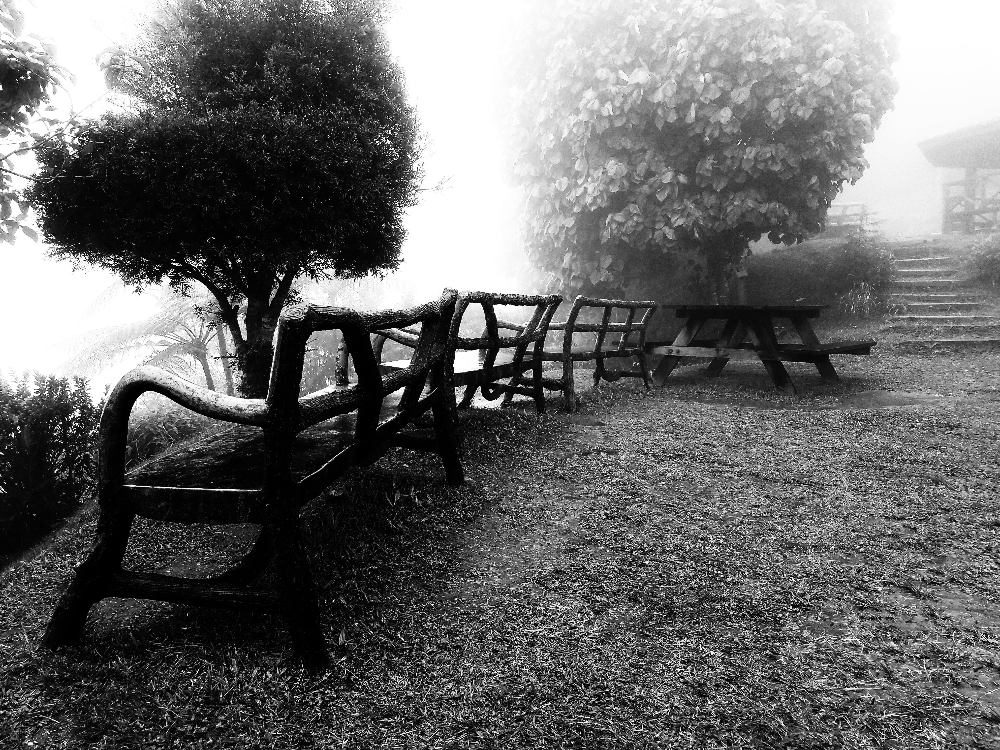

Photography
September 30th, 2021 by Peter-John Thompson

I like taking pictures. I am by no means a professional, but I have always wanted a DSLR. Until then, I will use my phone. I have been able to get some really good shots (in my opinion at least). I seem to gravitate to black and white, especially when for street photography. However, I think it's especially great for scenes that have a lot of flora in them. "But PJ...", you might be thinking, "isn't that so counter-intuitive? Nature is full of beautiful colors. You should capture it as is." Well, sure, I would agree with you if it weren't so...green.
This is a rant now. The color green in nature SPECIFICALLY annoys me. It's just everywhere and honestly I can't stand it. Plus, you can get some good shots of nature in Black and White anyway. I'm not missing out. In fact...here's a picture to prove just that.
This isn't to say that I'm opposed to all colors, though. I do like the vibrancy that they can add, but if I had to choose one theme to stick with, it would be black and white. There are obviously some things I wouldn't desaturate, though. A black and white sunset? Heresy. A monochrome seascape? I have done this, yes, but unlike green, I don't mind a ubiquitous blue. So I'd leave those as-is. There are more things here and there, but frankly, my amateur thoughts on photography would require a blog of their own, so let's leave it here.